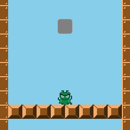
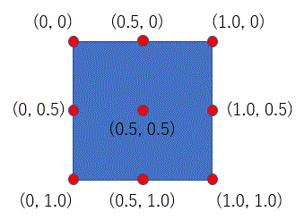

はじめに
マリオシリーズが代表するように、敵を上から踏みつけた時に敵が潰れるエフェクトはアクションゲームではもはや定番になっています。 今回は、敵が潰れるエフェクトをphina.jsで表現してみます。

オブジェクトのoriginを理解する
- 今回の目的を実現するためには、オブジェクトのoriginの変更を行う必要があります。
- phina.jsのオブジェクトにはoriginというプロパティがあり、位置指定、回転、拡大縮小の時の基準となっています。
- Vector2クラス形式となっており、デフォルトは(0.5, 0.5)でオブジェクトの中心になっています。

敵が潰れるエフェクト
- 敵が潰れるアニメーションは、tweenerを用います。
- ScaleYの値を変化させて縦に縮小させます。
// 縦方向に縮小
bugbow.tweener.clear().to({scaleY: 0.1}, 200);
- 期待する結果としては下方向に潰れて欲しいところですが、今のままだと中心に向かって縮小され、思い通りの結果になりません。
- これはoriginがオブジェクトの中心になっているのが原因です。
originの変更と位置の調整
- 下に縮小するようにするためには、originを(0.5, 1.0)に変更します。
- 変更したoriginがオブジェクトの位置の基準となるため、変更したoriginの分だけ上にずらして位置調整します。
// origin変更
bugbow.setOrigin(0.5, 1.0);
// 位置調整
bugbow.y += bugbow.height / 2;
// 縦方向に縮小
bugbow.tweener.clear().to({scaleY: 0.1}, 200);
おわりに
実際には、敵が潰れたコマ画像を用意してフレームを切り替えた方が効率的かもしれません。今回の内容は、あくまでも１つのアプローチと考えてもらえればと思います。